16-825 · Learning for 3D Vision
Each GIF shows the optimized source (left) next to the ground-truth target (right), rendered from 360°.
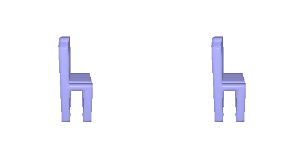
python fit_data.py --type voxwhere \(x_i\) is the predicted logit of voxel \(i\), \(y_i \in \{0, 1\}\) its target occupancy, \(\sigma\) the sigmoid, and \(N = 32^3\) the number of voxels.
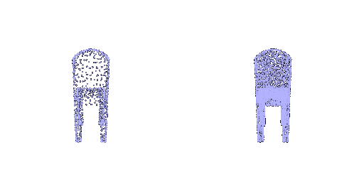
python fit_data.py --type pointwhere \(S\) is the predicted point cloud, \(T\) the target point cloud, and \(|S|\), \(|T|\) their numbers of points.
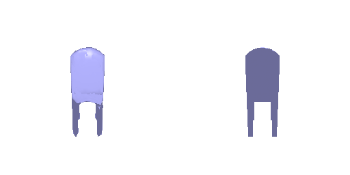
python fit_data.py --type meshwhere \(\mathcal{L}_{\text{chamfer}}\) is the 1.2 loss on points sampled from the predicted and target mesh surfaces, \(V\) the set of mesh vertices, \(v_i\) the position of vertex \(i\), \(N(i)\) the vertices that share an edge with it, \(w_{\text{chamfer}} = 1.0\) and \(w_{\text{smooth}} = 0.1\).
Each example shows the input RGB image, the predicted 3D output, and the ground-truth mesh for a sample from the test set.
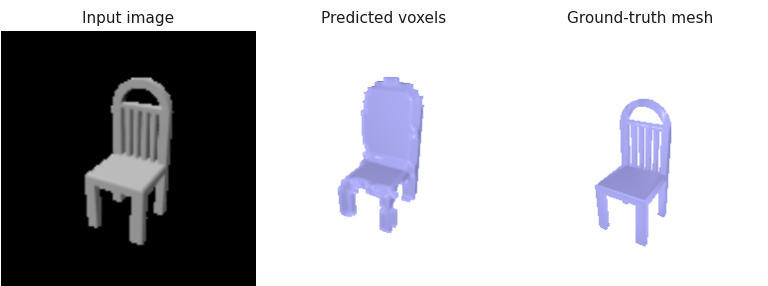
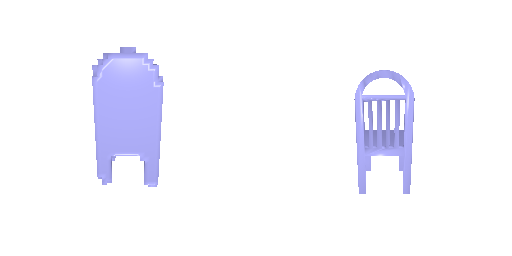
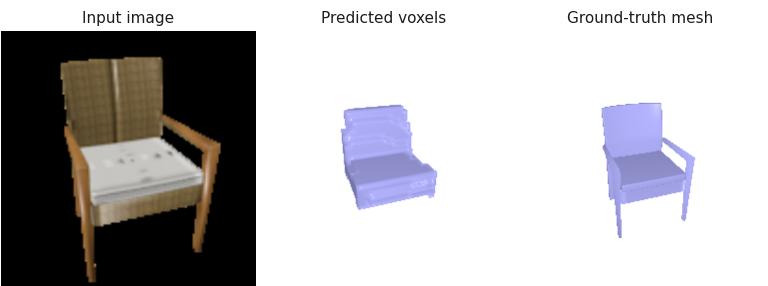
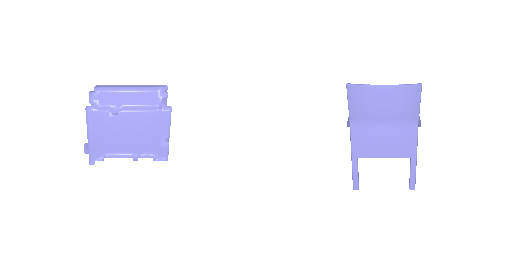
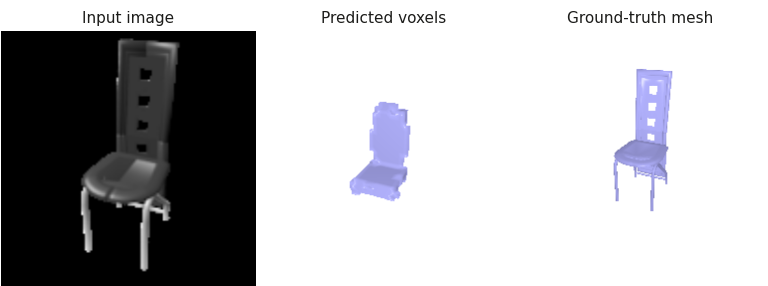
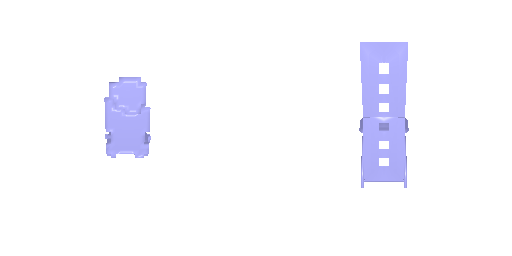
Each example uses the chair’s most front-facing input view; the prediction (occupancy > 0.5) and ground truth are rendered from the input camera.
F1@0.05: 53.4
python eval_model.py --type vox --load_checkpointFC to 256×4³, three ConvTranspose3d (+BatchNorm, ReLU) up to 32³, then a
3×3×3 Conv3d to one logit per voxel. BCE-with-logits loss; Adam (lr 4e-4, batch 32), 10,000 iterations, encoder fine-tuned on a GPU; --load_feat not used.
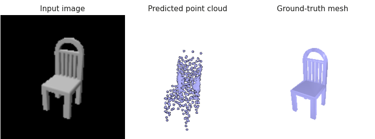
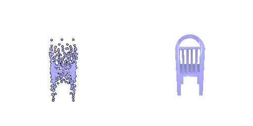
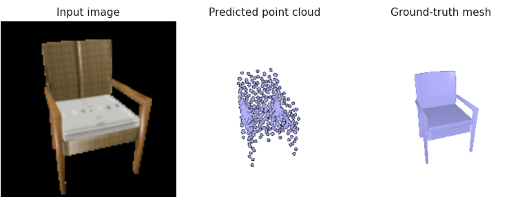
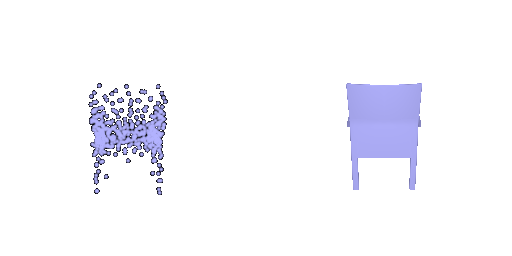
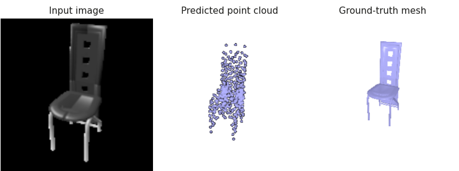
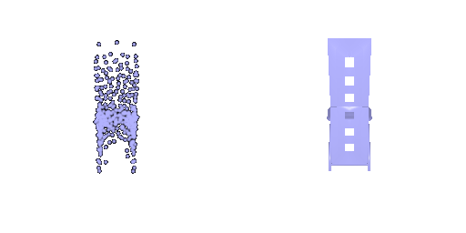
Each example uses the chair’s most front-facing input view; the prediction (1,000 points) and ground truth are rendered from the input camera.
F1@0.05: 80.0
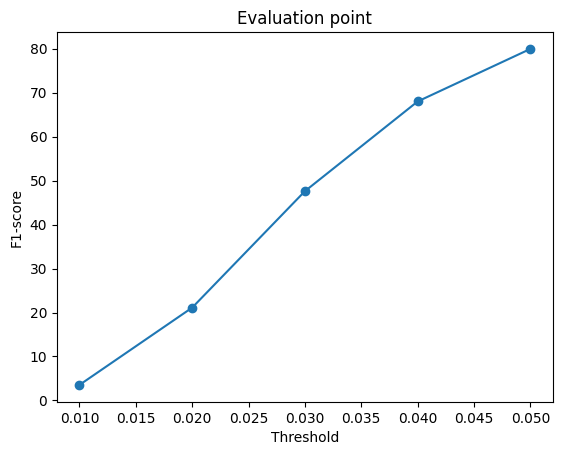
python eval_model.py --type point --load_checkpointMLP 512 → 1024 → 2048 → 1000×3 (ReLU between layers). Chamfer loss against 1,000
points sampled from the GT mesh; Adam (lr 4e-4, batch 32), 10,000 iterations, encoder fine-tuned on a GPU; --load_feat not used.
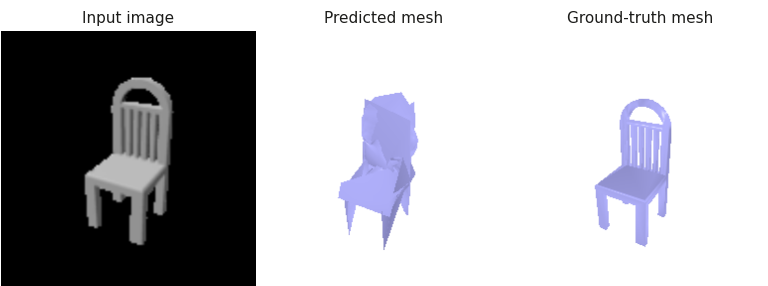
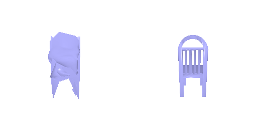
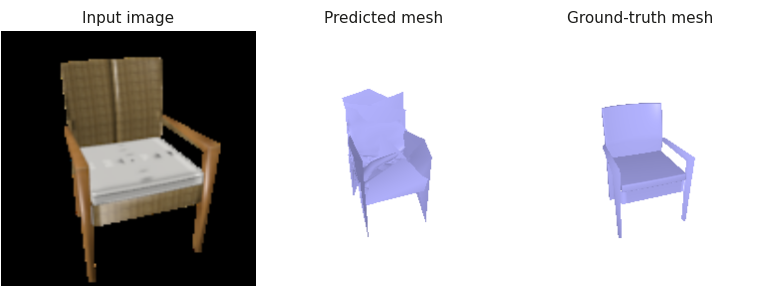
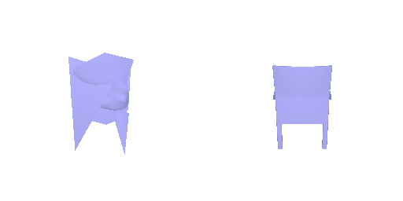
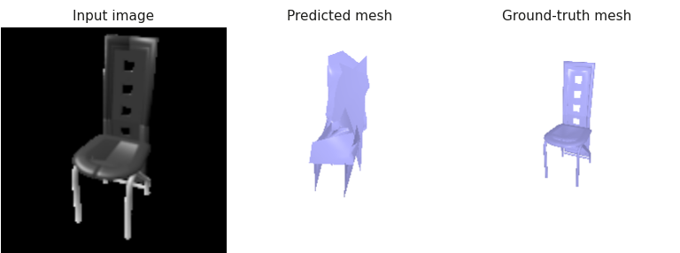
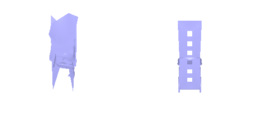
Each example uses the chair’s most front-facing input view; the prediction and ground truth are rendered from the input camera.
F1@0.05: 72.7
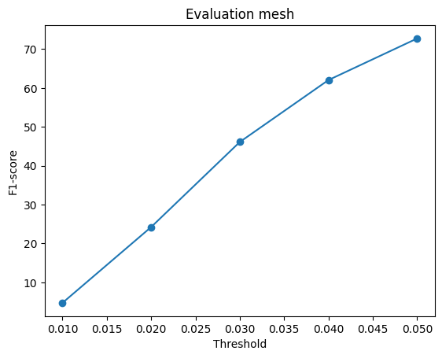
python eval_model.py --type mesh --load_checkpointLevel-4 icosphere (2,562 vertices). MLP 512 → 1024 → 2048 → 2562×3 with
tanh predicts per-vertex offsets. Loss: chamfer (1,000 samples, w_chamfer = 1) +
Laplacian smoothing (w_smooth = 0.1); Adam (lr 4e-4, batch 32), 10,000 iterations, encoder fine-tuned on a GPU; --load_feat not used.
| Representation | F1@0.05 |
|---|---|
| Voxel grid | 53.4 |
| Point cloud | 80.0 |
| Mesh | 72.7 |
Varied: the occupancy threshold that turns the voxel model’s probabilities into a surface
(--vox_thresh, default 0.5). Same checkpoint and the same input views for every setting
(--seed 0).
| Threshold | F1@0.05 | Empty predictions |
|---|---|---|
| 0.1 | 39.0 | 0 |
| 0.2 | 57.1 | 0 |
| 0.3 | 65.0 | 3 |
| 0.4 | 61.6 | 7 |
| 0.5 (default) | 53.0 | 25 |
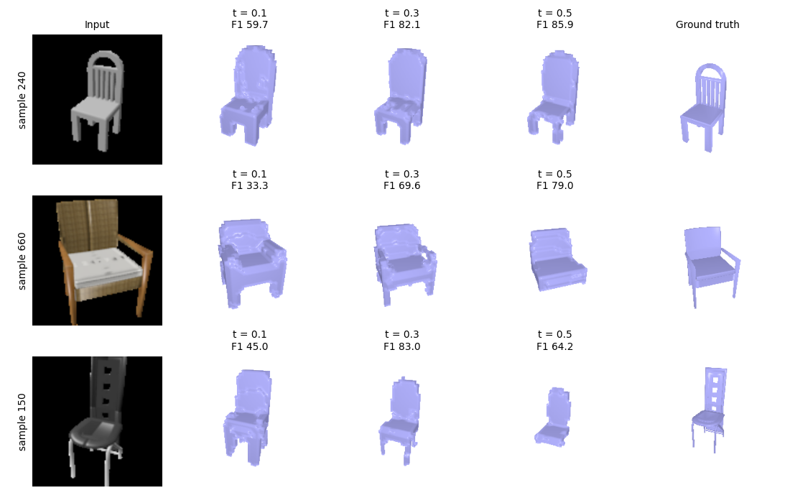
t=0.3 is the best statistically and visually, largely raising F1@0.05 from t=0.1 to t=0.3, and mostly tying with t=0.5 on each sample without retraining. About 96% of voxels are empty, so BCE leaves the model under-confident on occupied ones. At t=0.5 thin parts (legs) drop out and 25 predictions are empty in overall test dataset; at 0.1 the shape inflates and precision falls. Thin chairs gain most (sample 150: 64 → 83), while solid chairs are slightly better at 0.5 (samples 240, 660). The threshold was swept on the test set, so 65.0 is slightly optimistic.
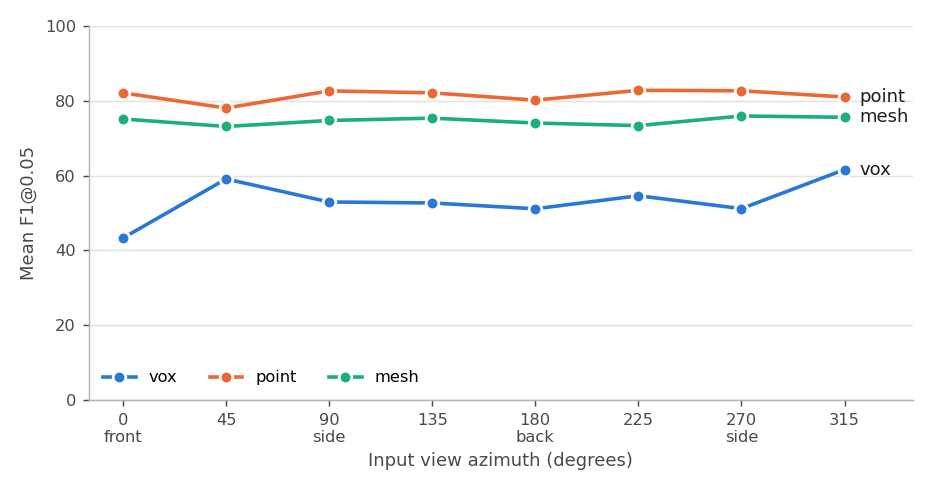
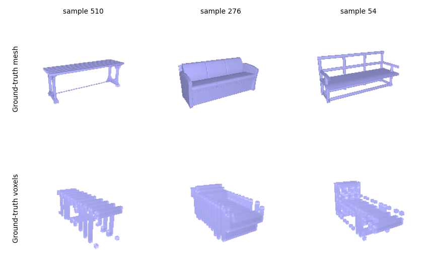
Point and mesh are view-invariant (their curves are flat), so they infer the shape rather than memorizing a viewpoint. The voxel model depends much more on the view: its F1 changes with the input angle and drops to 43 for front-facing inputs. A likely cause is its training targets: some ground-truth voxel grids in the original dataset are rotated relative to their meshes (see Rotated ground-truth voxels above), so the model learns an inconsistent orientation.
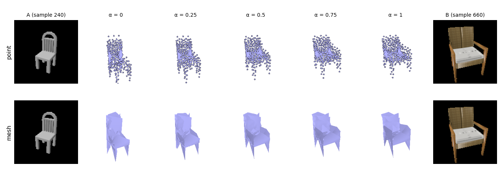
The shapes change gradually (the chair widens, the seat deepens, the back shortens) with no jumps or broken intermediates. The interpolated latent is the 512-d output of the ResNet18 encoder’s global average-pooling layer, so the encoder maps chairs to a continuous shape space rather than to isolated templates.
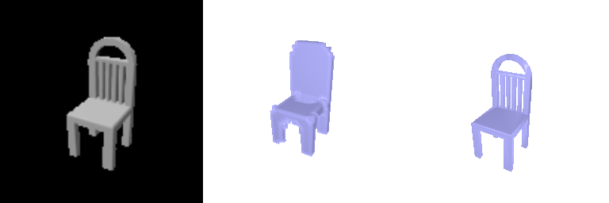
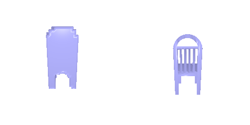
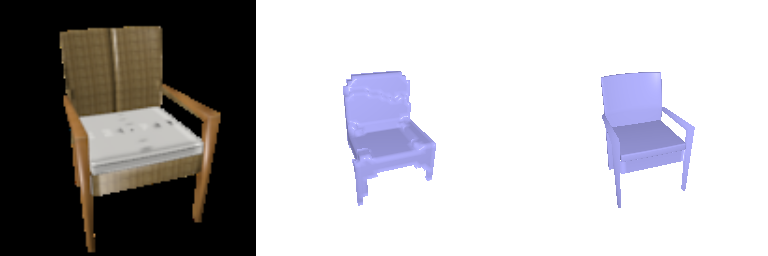
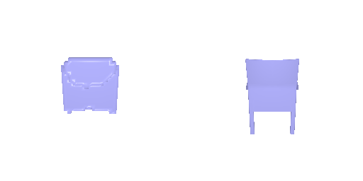
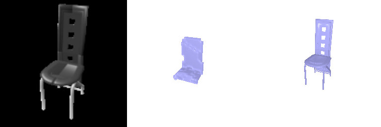
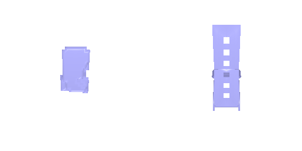
Same chairs and input views as 2.1. Each image: input RGB | predicted occupancy (> 0.5) | ground-truth mesh, rendered from the input camera.
F1@0.05: 52.3 (occupancy > 0.5) · 60.9 (occupancy > 0.3)
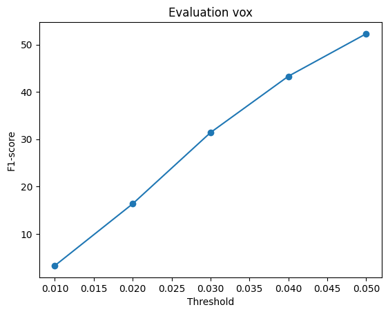
python eval_model.py --type vox --vox_dec implicit --exp _implicit --load_checkpointAn MLP predicts the occupancy logit of a 3D point p from [p; z]. It is queried at all points of a 32³
grid in (−1, 1)³ and reshaped to 32³, so the BCE loss and evaluation from 2.1 are reused.
Layers: Linear(3, 256) on p plus Linear(512, 256) on z, two 256-wide hidden layers,
then 256 → 1 (ReLU between). Training as in 2.1.
On the same input views, it matches 2.1’s transposed-conv decoder at threshold 0.5 (52.3 vs 53.0; 2.1’s model re-evaluated on the views used in 2.4) with 42× fewer parameters (0.26 M vs 11.2 M), but loses more thin parts (60.9 vs 65.0 at 0.3).
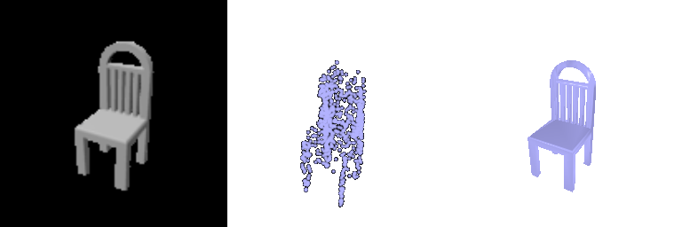
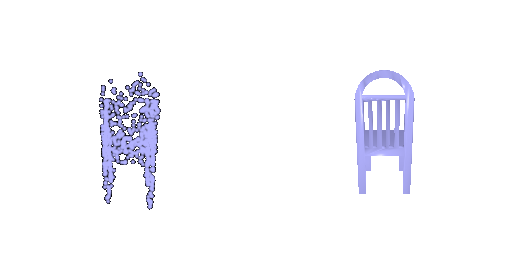
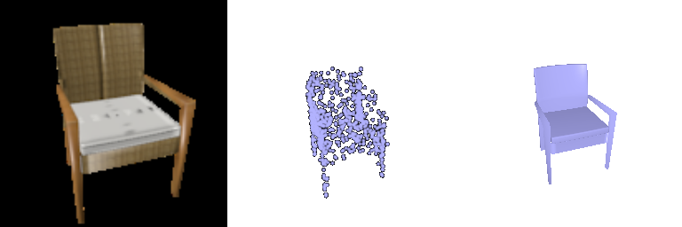
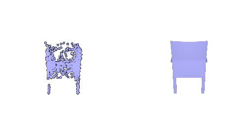
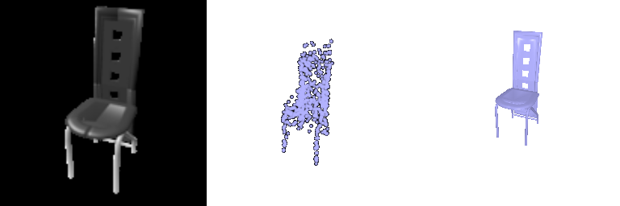
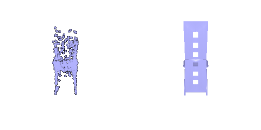
Same chairs and input views as 2.2. Each image: input RGB | predicted point cloud (1,000 points) | ground-truth mesh, rendered from the input camera.
F1@0.05: 75.8
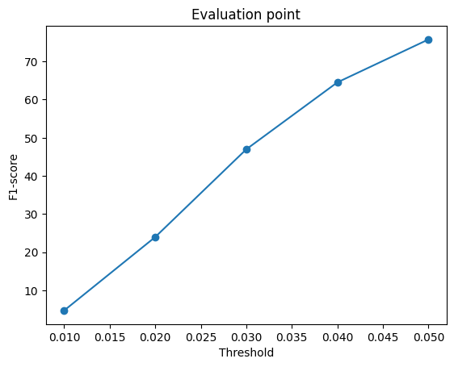
python eval_model.py --type point --point_dec parametric --exp _param --load_checkpoint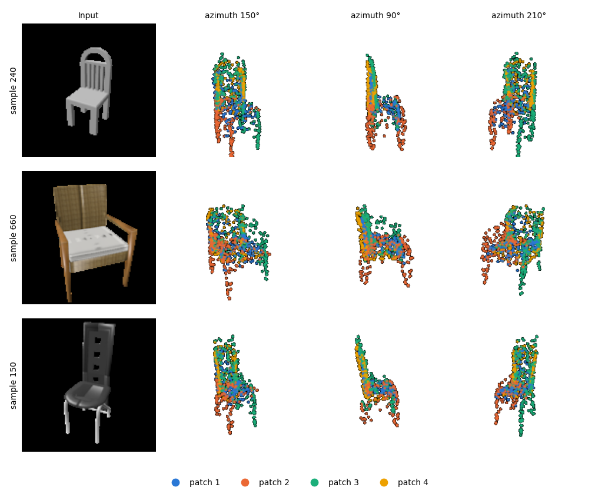
AtlasNet-style decoder with 4 patches. Each patch is an MLP that maps a 2D sample (u, v) ∈ [0, 1]²
and z to a 3D point (Linear(2, 256) on (u, v) plus Linear(512, 256) on z, two
256-wide hidden layers, then 256 → 3). Each patch outputs 250 points, giving 1,000 in total; (u, v) are
resampled every training step and fixed at evaluation. Chamfer loss and training as in 2.2.
On the same input views, it scores 75.8 vs 79.3 for 2.2’s fully connected decoder (2.2’s model re-evaluated on the views used in 2.4), with 8× fewer parameters (1.06 M vs 8.8 M). Colored by patches, each of the four patches spreads over different parts (e.g. red covers left 2 legs, green covers right 2 legs and upper backrest), but the patches overlap heavily, so no patch specializes in a single part.